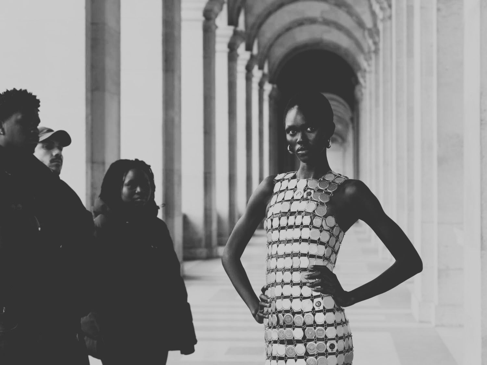

Collaborations
Marine Serre × Louvre
An unprecedented collaboration with the Louvre: the first time in the museum's history that a fashion house has been granted creative carte blanche on the Mona Lisa itself.
- Campaign
- Alice Mann
- Documentary
- Loïc Prigent
- Co-production
- Artsphere
- Brand
- Marine Serre

The deal
Led all negotiations with the institution from first contact through to delivery. With no formal budget on either side, structured the entire production around in-kind partnerships in place of a marketing spend, securing free use of the Louvre for the shoot.
A co-production with Artsphere to offset shoot costs, and a three-way deal bringing on acclaimed fashion documentarian Loïc Prigent.
The collection
Five-piece couture collection created in direct dialogue with the Mona Lisa.
Capsule commercial collection extending the collaboration into retail, accompanied by a window installation and mini boutique takeover.
The campaign
8-image campaign shot by Alice Mann in collaboration with Artsphere.
Documentary directed by Loïc Prigent.
Press breakfast at Café Marly followed by a private tour of the Louvre for press and guests.
100+
Placements
11
International markets
€180K
Tracked media value
180M
Total socials reach
